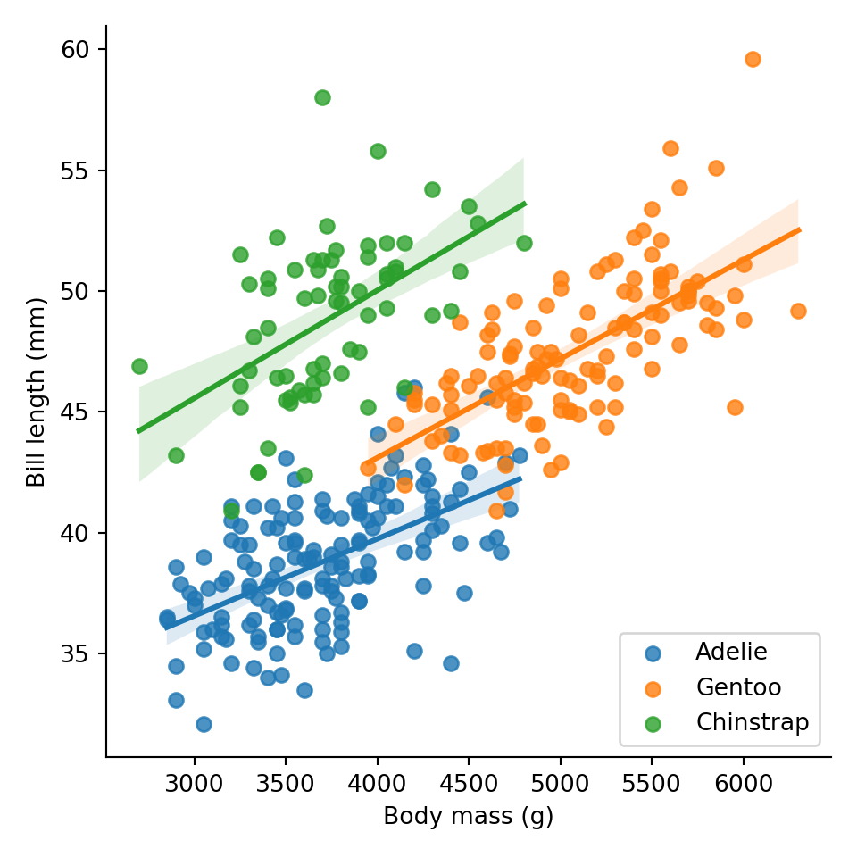

library(reticulate)Introduction to literate programming with Quarto
InfAR workshop
workshop
Note
The above is a code block that contains R code that will be evaluated when the document is rendered
The reticulate package allows us to use Python even though the document will be rendered using the R package knitr. This is so that we can then use knitr’s inline code evaluation (see the Code evaluation section below)
1 Level 1 heading
1.1 Level 2 heading
1.1.1 Level 3 heading
1.1.1.1 Level 4 heading
1.1.1.1.1 Level 5 heading
1.1.1.1.1.1 Level 6 heading
Body text. New lines get ignored. To start a new paragraph, we need 2 new lines.
This is now a new paragraph.
2 Markdown
2.1 Basic text formatting
Italics (or rather emphasis) is denoted with a single asterisk (*) or underscore(_) around text, like this or this. We can add boldface with double asterisks or underscores, like this or this. In practice, to ease readability of the markdown, I like to use underscores for emphasis and asterisks for boldface but that’s up to you. There’s a little side note to using these markdown special characters, so let’s add a footnote.1
For a slightly more exotic formatting, use double tilde (~~) for strikethrough and backticks (`) for monospace font often used for code (watch out, these are not quotes or apostrophes). The particular flavour of markdown used by Quarto also supports superscripts and subscripts.
For situations when you want to show a block of code, you can use text offset by four spaces
This is a block of monospace text you can use to show code.
There are, however better options that we'll talk about later.You can also make use of the built in syntax highlighting (supports over 140 languages) by enclosing your code in a backtick fence:
### Python sample code ###
import numpy as np
# basic for-loop
for i in range(0, 10):
print(i)/// JavaScript sample code ///
// arrow function (ES6 on)
const greet = (name) => `Hello ${name}`
greet("InfAR")/// C# sample code ///
var random = new Random();
int dice = random.Next(1, 7); // creates a number between 1 and 6 You can also use blockquote like this where you can quote an entire paragraph, if you so wish.
To end these kinds of formatting blocks, just insert a couple of new lines.
2.2 Lists
There are two kinds of lists: unordered (bullet points) and ordered (numbered/lettered).
- This
- is
- an unordered
- list
- supports multiple
- levels
- supports multiple
- This
- is
- an ordered list
- again, with levels
- unordered and ordered lists can be combined
- again, with levels
- this
- is
- also an ordered list
2.3 Links and images
If you want to include hyperlinks in your document, there are a couple of options. First, you can simply write out the URL, such as https://www.quarto.org. A slightly better way is to link the URL to some informative text. To learn more, visit the Quarto documentation page.
For more options, see the Quatro guide’s section on figures
2.4 Tables
| Name | Race |
|---|---|
| Meriadoc | Hobbit |
| Denethor | Man |
| Galdriel | Elf (Noldo) |
| Sauron | Maia |
| Grishnákh | Orc |
3 Maths
By default, Quarto uses MathJax a maths rendering engine similar to LATEX math mode (for those familiar).
Maths is indicated by a $ (inline) or $$ (block) fence. For instance, $\sum x_i - \bar{x}$ will be rendered as \(\sum x_i - \bar{x}\), while
$$x = \frac{-b\pm\sqrt{\Delta}}{2a}$$
$$\Delta = b^2 - 4ac$$produces blocked maths:
\[x = \frac{-b\pm\sqrt{\Delta}}{2a}\] \[\Delta = b^2 - 4ac\]
To align multi-line maths at arbitrary points, use the aligned environment, \\ for new line, and the & alignment marker:
$$
\begin{aligned}
\sigma &= \sqrt{ \frac{ \sum_{ i = 0 }^n(x_i - \bar{x})^2}{n-1}} \\
& = \sqrt{\sigma^2}
\end{aligned}
$$\[ \begin{aligned} \sigma &= \sqrt{ \frac{ \sum_{ i = 0 }^n(x_i - \bar{x})^2}{n-1}} \\ & = \sqrt{\sigma^2} \end{aligned} \]
You can go much more complex than that…
$$
\begin{aligned}
\mathrm{E}(s^2) &= \mathrm{E}\Bigg(\sum_{i=1}^n\frac{(x_i - \bar{x})^2}{n-1}\Bigg)\\
&= \frac{1}{n-1}\mathrm{E}\Bigg(\sum_{i=1}^nx_i^2 - n\bar{x}^2\Bigg)\\
&= \frac{1}{n-1}\Bigg[\sum_{i=1}^n\mathrm{E}\big(x_i^2\big) - n\mathrm{E}\big(\bar{x}^2\big)\Bigg]\\
&= \frac{1}{n-1}\Bigg[\sum_{i=1}^n\Big\{\mathrm{Var}(\bar{x})+\big[\mathrm{E}(x_i)\big]^2\Big\} - n\Big\{\mathrm{Var}(\bar{x})+\big[\mathrm{E}(\bar{x})\big]^2\Big\}\Bigg]\\
\end{aligned}
$$\[ \begin{aligned} \mathrm{E}(s^2) &= \mathrm{E}\Bigg(\sum_{i=1}^n\frac{(x_i - \bar{x})^2}{n-1}\Bigg)\\ &= \frac{1}{n-1}\mathrm{E}\Bigg(\sum_{i=1}^nx_i^2 - n\bar{x}^2\Bigg)\\ &= \frac{1}{n-1}\Bigg[\sum_{i=1}^n\mathrm{E}\big(x_i^2\big) - n\mathrm{E}\big(\bar{x}^2\big)\Bigg]\\ &= \frac{1}{n-1}\Bigg[\sum_{i=1}^n\Big\{\mathrm{Var}(\bar{x})+\big[\mathrm{E}(x_i)\big]^2\Big\} - n\Big\{\mathrm{Var}(\bar{x})+\big[\mathrm{E}(\bar{x})\big]^2\Big\}\Bigg]\\ \end{aligned} \]
4 Code evaluation
The real power of Quarto lies in the integration of the markdown-powered text editor and code evaluation.
You can easily include blocks of actual R, Python, Julia, or Observable JS code that will get evaluated before the document gets rendered. To do that, use a code fence with the following syntax:
```{language}
code
```So, if you’re writing in Python, we need:
```{python}
def greet(whom):
return f'Hello {whom}'
greet("InfAR")
```'Hello InfAR'As you can see in the rendered document, the code got evaluated and its output inserted under the code block.
4.1 Execution options
You can change the way code blocks are treated by specifying execution options. This can be done either globally (for all code blocks) in the document header at the very top or locally within a given code block using the #| to denote options.
There are many execution options (see Quarto documentation) so I’ll just demonstrate how they’re used in principle. For instance, if you want the code blocks to be hidden from the rendered document by default while still showing the output of the code, you’d set the echo option to false in the document header like so:
---
# other header fields, such as title omitted
execute:
echo: false
---If, however, you still want to show a particular block of code in the document, you can turn the echo option on locally:
```{language}
#| echo: true
... your code ...
```
Note
Local code block options override global ones for a given block!
4.2 Inline code (only with knitr)
If you are using knitr to evaluate code2, you can use its inline code chunks (r) to insert the output of your code straight into body text:
The line:
The result of the code above is `r py$greet('InfAR')`.3
will produce:
The result of the code above is Hello InfAR.
4.3 Tables and figures
Using code blocks, it’s very easy to tabulate and plot your data.
Here is a quick example of a scatterplot in Python. Notice the options in the source document that govern what the figure cation should be and where it should be positioned as well as set the label for the figure that can then be referenced as Figure 5 (see Section 5.1).
import pandas as pd
import seaborn as sns
import matplotlib.pyplot as plt
penguins_url = "https://gist.githubusercontent.com/slopp/ce3b90b9168f2f921784de84fa445651/raw/4ecf3041f0ed4913e7c230758733948bc561f434/penguins.csv"
df = pd.read_csv(penguins_url)
plot = sns.lmplot(x="body_mass_g", y="bill_length_mm",
data=df, fit_reg=True, hue='species', legend=False)
plt.legend(loc='lower right')
plt.xlabel('Body mass (g)')
plt.ylabel('Bill length (mm)')
plt.show()
And here is a nice HTML table using R and its kableExtra package.
library(kableExtra)
library(dplyr)
penguins_url = "https://gist.githubusercontent.com/slopp/ce3b90b9168f2f921784de84fa445651/raw/4ecf3041f0ed4913e7c230758733948bc561f434/penguins.csv"
read.csv(penguins_url) |>
dplyr::group_by(species) |>
dplyr::summarise(
m_mass = mean(body_mass_g, na.rm=TRUE),
sd_mass = sd(body_mass_g, na.rm=TRUE),
) |>
kableExtra::kbl(
digits = 2,
col.names = c("Species", "_M_", "_SD_"), # you can even use markdown
format = "markdown") |> # provided you specify format
kableExtra::kable_styling(bootstrap_options = "striped")| Species | M | SD |
|---|---|---|
| Adelie | 3700.66 | 458.57 |
| Chinstrap | 3733.09 | 384.34 |
| Gentoo | 5076.02 | 504.12 |
5 Academic writing
5.1 Cross-references
You can refer to a section in your document by adding a section label {#sec-label} to the section heading and then referring to this label with an @sec-label (see Section 5.1). Similarly, you can refer to any images, figures (Figure 4), or tables (Table 1).
Important
The #sec- for sections, #fig- for figures and images, and #tbl- for tables is required.
5.2 Citing literature
Bielik et al. (2015) say this is fine. That, however, is probably balls (Bielik et al., 2019; Schneider et al., 2012) König, Bielik, and Schneider also say: “oh man, whatever…” (2018, p. 42) Finally, Osintseva and colleagues (2020) went to the pub.
All cited sources will automatically be included in the list of references at the bottom of the document.
6 Post script
This was just a small taster covering the very basics of what you can do with Quarto. For a deeper dive, I strongly encourage you to check out the documentation!
References
Bielik, M., Koenig, R., Fuchkina, E., Schneider, S., & Abdulmawla, A. (2019). Evolving Configurational Properties: Simulating multiplier effects between land use and movement patterns. Proceedings of the 12th International Space Syntax Symposium, 279.
Bielik, M., Schneider, S., Kuliga, S., Valášek, M., & Donath, D. (2015). Investigating the effect of urban form on the environmental appraisal of streetscapes. Proceedings of the 10th International Space Syntax Symposium, London, UK, 13–17.
Koenig, R., Bielik, M., & Schneider, S. (2018). System dynamics for modeling metabolism mechanisms for urban planning. Proceedings of the Symposium on Simulation for Architecture and Urban Design, 1–8.
Osintseva, I., Koenig, R., Berst, A., Bielik, M., & Schneider, S. (2020). Automated parametric building volume generation: A case study for urban blocks. Proceedings of the 11th Annual Symposium on Simulation for Architecture and Urban Design, 1–8.
Schneider, S., Bielik, M., & König, R. (2012). The parametric exploration of spatial properties: Coupling parametric geometry modeling and the graph-based spatial analysis of urban street networks. Proceedings of the 2012 Symposium on Simulation for Architecture and Urban Design, 1–7.
Footnotes
If you want to use literal asterisks or underscores that you don’t want to be interpreted as markers of emphasis, you need to “escape” them using a backslash, like this:
\*and\_. The same goes for all other special characters.↩︎This will happen automatically if the first code block is an
Rblock. You can do this even if you want to code in Python and just use thereticulatepackage like we did at the top of this document.↩︎Because we are primarily using
Rhere and interfacing with Python via thereticulatepackage, all objects that are created in Python are stored inside ofpy. This is why we are calling thegreet()function from inside thepyobject inRusingpy$greet(). We are doing this because, unfortunately, there is no elegant way in Quarto to print out inline code like this when using Python natively (through the Jupyter engine).↩︎